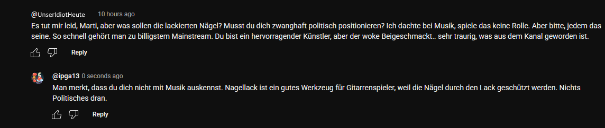

Fall Nr.1: Der Musikpolitiker
In diesem Kommentar regte sich ein YouTube Nutzer darüber auf, dass der YouTube Muskiker "Marti Fischer" als Mann Nagellack trägt und sich damit angeblich klar politisch Positioniert.
Mal kurz davon abgesehen, dass es sowieso idiotisch ist, jede ungewöhnlichere Ausdrucksart direkt als politisch zu bezeichnen, und dass Marti sich in vergangener Zeit des öfteren politisch Links eingeordnet hat, ist es garnicht allzu abwegig, sich die Nägel zu lackieren, denn beim Gitarrespiel werden die Nägel durch die Lackschicht geschützt.
Dazu noch: Woke bedeutet, dass man die Augen nicht vor Problemem verschließt, sondern diese angeht um sie zu lösen. Bevor du dich drüber aufregst, bitte erst nachdenken, das spart mir viel *CONFUSED UNGA BUNGA*
Ich bitte die Bildgrößen zu entschuldigen, CSS ist ein Hurensohn.
Kommentarbild

Kontextbild
Kommentar des Idioten:
Es tut mir leid, Marti, aber was sollen die lackierten Nägel? Musst du dich zwanghaft politisch positionieren? Ich dachte bei Musik spiele das keine Rolle. Aber bitte, jedem das seine. So schnell gehört man zu billigstem Mainstream. Du bist ein hervorragender Künstler, aber der woke Beigeschmack... sehr traurig, was aus dem Kanal geworden ist.
Meine Antwort:
Man merkt, dass du dich nicht mit Musik auskennst. Nagellack ist ein gutes Werkzeug für Gitarristen, weil die Nägel durch den Lack geschützt werden. Nichts Politisches daran.